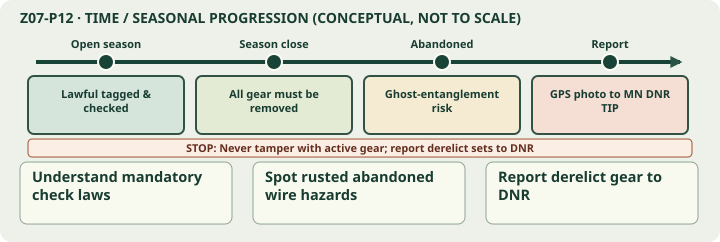

Z07-P12 · Traps and snares · New manuscript
Statutory Check Intervals and Abandoned Ghost-Gear Harm
Explain why statutory check rules exist and why abandoned traps, wires, or nets inflict prolonged suffering indefinitely.
When it applies · Understanding legal accountability and recognizing abandoned ghost gear.
Equipment · GPS/phone camera for distant reporting only.

Actions
- Understand that state laws mandate strict trap-checking intervals and identification tagging specifically to limit animal distress and enforce legal accountability.[L01, L02]
- Recognize that abandoned wire loops, rusted unmarked traps, and discarded monofilament nets become persistent ghost gear that entangles and kills wildlife across seasons.[L09, L13]
- Report suspected abandoned, rusted, untagged, or out-of-season trapping hardware with exact GPS coordinates to MN DNR Conservation Officers rather than removing or tampering with active gear.[L09, L13]
Failure recognition · Removing someone else lawful gear can violate state trap-interference statutes, while ignoring derelict out-of-season wire allows ongoing animal deaths.[L09, L13]
Verify · Suspected abandoned or out-of-season hardware is documented safely by GPS/photo without tampering and reported to DNR.[L09, L13]
Stop or change course · Stop touching unknown rusted traps or wire; report location and photos directly to conservation enforcement.[L09, L13]
Evidence and editorial notes
- L01 · Minnesota DNR · Minnesota Trapping Regulations and Fur Harvest Rules (Current web edition)
- Section: Minnesota trapping licensing, seasons, and statutory limits · Conditions: Any regulated trapping activity or legal reference in Minnesota
Support: Trapping is strictly regulated by license, season, species, trap type, set location, check intervals, and landowner permission; unauthorized trapping is illegal.
Limitations: Emergency narratives never create an exemption to set traps or snares; verify current statute and DNR handbook every season. · Conflicting evidence: None noted.
Editorial note: Primary Z07 legal boundary. · Specialist reviewer: Wildlife law and DNR enforcement reviewer
Primary source · checked 2026-11-25 - L02 · Association of Fish & Wildlife Agencies · Best Management Practices for Trapping and Furbearer Welfare (Current web edition)
- Section: AFWA Best Management Practices for animal welfare and selectivity · Conditions: Evaluating trapping principles, welfare, and non-target risk
Support: AFWA BMPs evaluate regulated devices on animal welfare, efficiency, selectivity, user safety, and practicality through scientific testing.
Limitations: Improvised traps and snares lack scientific welfare testing and selectivity controls, causing severe injury and non-target capture. · Conflicting evidence: None noted.
Editorial note: Anchors Z07 welfare & conceptual classification without building instructions. · Specialist reviewer: Wildlife welfare scientist
Primary source · checked 2026-11-25 - L09 · Minnesota DNR · Turn In Poachers (TIP) and Conservation Officer Reporting (Current web edition)
- Section: Reporting illegal, unmarked, or abandoned traps and snares · Conditions: Encountering suspected unlawful, out-of-season, or unsafe sets
Support: Do not touch, spring, or steal equipment; photograph from a safe distance with location coordinates and report to MN DNR TIP or local law enforcement.
Limitations: Tampering with lawful traps can be illegal and risks severe hand injury from stored spring energy. · Conflicting evidence: None noted.
Editorial note: Protects bystanders from injury and legal liability. · Specialist reviewer: Conservation enforcement reviewer
Primary source · checked 2026-11-25 - L13 · Minnesota DNR · Scientific and Natural Areas Visitor Rules and Prohibitions (Current web edition)
- Section: Zero-disturbance scientific preserve ethics · Conditions: Sensitive habitats, wetlands, and rare-species corridors
Support: Natural-area conservation prohibits altering vegetation, digging pits, or leaving wire/cordage debris that entangles wildlife indefinitely.
Limitations: Abandoned wire or monofilament creates persistent ghost-entanglement hazards. · Conflicting evidence: None noted.
Editorial note: Addresses ghost-gear and environmental restriction. · Specialist reviewer: Conservation ecologist
Primary source · checked 2026-11-25
Source lineage · New manuscript (Z07 P18 welfare and conservation) · Classification · New manuscript.